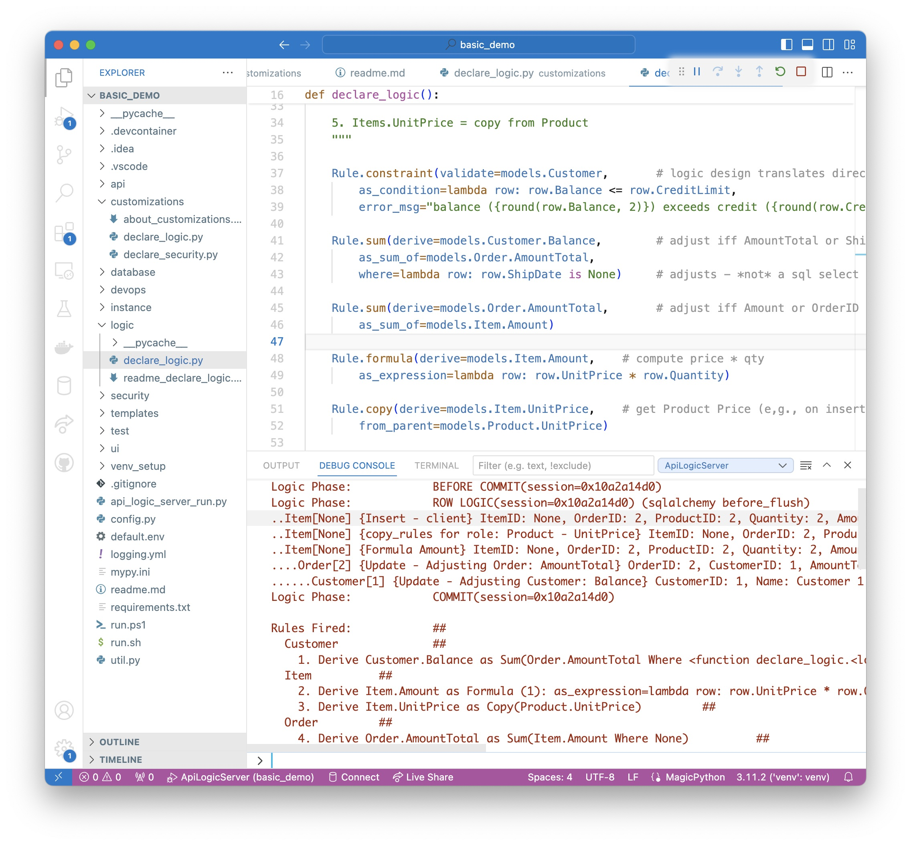
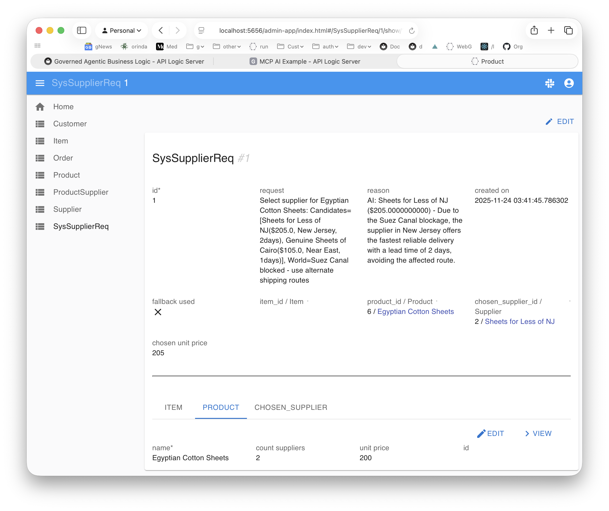

Governed Agentic Business Logic
Purpose
This article is intended for senior architects,
with an interest in agentic transaction processing,
addressing both classic deterministic and probabilistic logic,
provided as a MCP-discoverable containerized API.
Overview
Overview
Backend systems have long represented nearly half the time and cost of building database systems. The advent of AI brings rising expectations:
- reduced time and cost, and
- increased functionality through MCP-based natural-language orchestration and logic that is not practical to hard-code (example below)
These expectations can be met — but only with architectures designed to accommodate inherent AI uncertainty. In particular, systems need governance to ensure that AI-driven changes still enforce business policy. In this article, we provide working examples of modern backends and explore the key architectural decisions required to provide that governance.
In large transactional systems, the most critical business logic is transaction logic: rules enforced automatically at commit time to keep persistent data correct. This includes derived values, invariants, and constraints that must hold no matter how a change is initiated — via an API, a workflow, a batch process, or an AI agent.
As AI agents are increasingly allowed to propose changes to real business data, commit-time logic becomes the natural place to ensure that AI-generated values adhere to business policy.
A Governed Business Logic Agent (GABL) addresses this by integrating three kinds of logic:
-
Deterministic Logic: declarative rules (multi-table derivations and constraints) that must always be correct on commit
e.g., “Customer balance is the sum of unpaid Orders and must not exceed the credit limit.” -
Probabilistic Logic: AI-driven reasoning under uncertainty
e.g., “Select the optimal supplier based on cost, lead time, and world conditions.” -
Integration Logic: declarative, event-driven actions
e.g., “Publish Order to Kafka topic order_shipping when date_shipped is set.”
and provides:
-
Enterprise Class API: including filtering, CRUD, pagination, optimistic locking, security, and governed business logic — ready for custom app dev (e.g., vibe), app integration, and B2B.
-
Commit-Time Enforcement: logic is enforced automatically on every update, including dependency-ordered computation and constraint checks before the transaction commits.
-
MCP Discovery: safe AI interaction with system capabilities
e.g., an assistant discovers entities, rules, and actions via MCP and issues a validated update.
Brief Example
3 Copilot Prompts to Create and Test a Governed Business Logic Agent
Prompt 1 (Create MCP Server from existing database):
Create a system named basic_demo from samples/dbs/basic_demo.sqlite
This single command produces a complete, enterprise-class API — including filtering, CRUD, pagination, optimistic locking, security, and governed business logic — exposed as an MCP-discoverable service.
Prompt 2 (Add Natural Language Logic):
Use case: Check Credit:
1. The Customer's balance is less than the credit limit
2. The Customer's balance is the sum of the Order amount_total where date_shipped is null
3. The Order's amount_total is the sum of the Item amount
4. The Item amount is the quantity * unit_price
5. The Product count suppliers is the count of the Product Suppliers
6. Use AI to set Item field unit_price by finding the optimal Product Supplier based on cost, lead time, and world conditions
Use case: App Integration
1. Send the Order to Kafka topic 'order_shipping' if the date_shipped is not None.
This creates the governable transaction logic enforced on commit, active for all APIs. Developers can review the DSL before execution, providing a natural human-in-the-loop checkpoint.
Note that rule 6 is an example of probabilistic logic — bounded by deterministic rules 1-5 under transactional governance.
Prompt 3 (Test via MCP-discovered API): ️
On Alice's first order, update the widget quantity to 100
This will run the transaction, with transparent logging showing how the rules fire.
This is not an autonomous planning agent. It is a governed logic execution agent with bounded AI participation.

The diagram above shows the final testing step for the completed system, built and tested by Copilot with no manual code edits.
1. Introduction
For decades, enterprise systems have depended on deterministic business logic — rules that enforce policy such as credit limits, multi-table derivations, and data consistency.
These rules were traditionally hand-coded, buried in controllers and methods, and expensive to build, test, and maintain. In most systems, deterministic logic consumes nearly half the total development cost.
AI dramatically reduces the time and cost of implementing classic business logic, while enabling new classes of logic that were previously impractical to hand-code.
Natural language makes it practical to express deterministic rules directly — in a naturally declarative, order-independent form, stating what must be true rather than how to compute it. This avoids procedural glue code, preserves business intent, enables automatic dependency management, and is far more transparent / concise than the equivalent procedural implementation.
Beyond cost and time reduction, AI introduces something entirely new: probabilistic logic — reasoning, ranking, optimizing, and choosing the “best” option under uncertain conditions. This was never feasible to hand-code because it depends on natural language, context, world knowledge, and intelligent choice.
Both kinds of logic matter.
Both are needed in modern systems.
But they behave very differently.
This paper describes an architecture that unifies them — allowing a single natural-language description to produce:
- Deterministic Logic (DL): declarative, unambiguous business rules
- Probabilistic Logic (PL): generated Python handlers that call the LLM only where needed
…all governed by a deterministic rules engine that ensures correctness, safety, and explainability.
This is Governed Agentic Business Logic (GABL) — a governed agent runtime that allows AI to take real actions over enterprise data, enforced by deterministic business logic and bounded probabilistic reasoning.
2. How does AI fit in?
AI does not replace deterministic logic — it amplifies it. AI plays two distinct roles in GABL:
- At development time, AI assists by translating natural-language logic into a deterministic rules DSL.
- At runtime, AI may be invoked only where explicitly declared (see
use AIin the introductory example), to perform bounded probabilistic decisions whose results are validated and committed under transactional governance.
Traditionally, business logic was hand-coded in procedural form. Even simple policies expanded into long sequences of steps: retrieve this, loop over that, compute values, manage dependencies, enforce constraints, call downstream services. A single business requirement typically ballooned into hundreds of lines of procedural code.
Natural language changes this model completely.
The natural-language descriptions used here are declarative, not procedural:
- They capture policy in a form business users can read: how our data is validated, computed, and integrated.
- They are assertions what must be true after commit, not how to enforce it.
- They are dramatically more concise than procedural equivalents.
- They provide a clean foundation for generation and governance.
- They avoid procedural glue code.
For example:
“The Customer’s balance is the sum of the open Orders.”
This is already declarative. It expresses the business intent, not the mechanics.
Here is a concrete example of a unified, declarative natural-language description:
Declarative NL Logic
Use case: Check Credit Logic
1. The Customer's balance is less than the credit limit
2. The Customer's balance is the sum of the Order amount_total where date_shipped is null
3. The Order's amount_total is the sum of the Item amount
4. The Item amount is the quantity * unit_price
5. The Price is from the Product
Use case: App Integration
1. Send the Order to Kafka topic `order_shipping` if `date_shipped` is not None.
The logic for our two use cases are expressed entirely in declarative natural language — including deterministic logic (1–5) and integration logic. Importantly, note that the logic has a dependencies. Correct results require dependency management: dependencies must be recognized, and executed in a proper order.
3. Make Logic Executable: Rules
A natural question is: why not simply generate procedural code from the logic? The declarative natural-language logic above is a good formulation — but it must become executable. The decision tree below summarizes the alternatives we considered:

Introducing the Rules DSL (Domain Specific Language)
Our natural-language logic is concise and high-level, but it is not fully rigorous. For example: does “price is from the Product” mean we copy the price once, or reference it so later Product price changes update Order totals?
That ambiguity makes natural language an unsuitable execution model. As shown in 1. NL → CodeGen in the diagram above, executing directly from ambiguous intent is inherently unreliable.
So we translate the natural-language logic into a 2. Rules DSL that preserves the high level of abstraction while making intent unambiguous. We teach this DSL to the LLM by defining a small set of rule types (sum, formula, constraint, copy, event, etc. - for the full list, click here). That enables Copilot chat to call the LLM and convert the logic above into:
# Check Credit
Rule.constraint(validate=models.Customer, as_condition=lambda row: row.balance <= row.credit_limit, error_msg="Customer balance exceeds credit limit")
Rule.sum(derive=models.Customer.balance, as_sum_of=models.Order.amount_total, where=lambda row: row.date_shipped is None)
Rule.sum(derive=models.Order.amount_total, as_sum_of=models.Item.amount)
Rule.formula(derive=models.Item.amount, as_expression=lambda row: row.quantity * row.unit_price)
Rule.copy(derive=models.Item.unit_price, from_parent=models.Product.unit_price)
# App Integration
Rule.after_flush_row_event(on_class=models.Order, calling=kafka_producer.send_row_to_kafka,
if_condition=lambda row: row.date_shipped is not None, with_args={'topic': 'order_shipping'})
This avoids the issues around (1) in the diagram above: the logic must be disambiguated.
This DSL becomes the system of record: it is readable, reviewable, and can be checked into git. For example, observe the disambiguation of the item price logic.
CodeGen vs Runtime Engine
Next, how do we make the DSL executable? The decision tree outlines these alternatives:
-
3. LLM → code. Use an LLM to translate DSL rules into procedural code. This is attractive, but it exposes a core risk: LLMs tend to manage dependencies by heuristic pattern inference, which can miss subtle (but real) dependencies and produce business logic bugs. That makes this approach unsuitable.
- We tried this. We asked an LLM to translate rules into code; we found two serious dependency bugs; and the LLM itself identified the root case as dependency management via pattern-based reasoning. To see the study, click here.
-
4. purpose-built code generator. Write a code generator that knows each rule type and can compute dependencies correctly from rule semantics. This is a viable approach.
-
5. direct execution. Execute the DSL directly in a rules engine.
Both 4 (code generation) and 5 (direct execution) can be correct - provided dependencies are derived from rule semantics, not inferred heuristically.
Code generation (option 4) would introduce a second executable representation — 200 lines of procedural code derived from 5 rules (and, a real 100 table system would be 1000 rules). That was borne out in that same study - to see the procedural code, click here.
Code generation creates three problems:
- Understanding requires reading the generated code, not the rules
- Debugging requires tracing through generated logic, not inspecting rules (we've all learned that debugging assembler output of a compiler is painful)
- The generated code becomes the system of record, not the business rules
We therefore chose 5. direct execution because it keeps the rules as the executable code.. With direct execution, the 5 rules remain what runs, what you debug, and what auditors review. There's no translation layer to understand or maintain.
The Rules Engine
The LogicBank rules engine executes the DSL directly, enforcing transactional correctness and performance. It derives dependencies from rule semantics, executes only affected rules on change, enforces constraints before commit, and provides a complete audit trail.
The runtime lifecycle is described in the next section.
Runtime lifecycle
At runtime, the rules engine enforces correctness by executing only the rules affected by concrete data changes, within the database transaction lifecycle.
-
Startup: when the service starts, the Rules DSL is loaded and validated. This is where rule metadata is assembled (what each rule reads/writes, dependency links, rule ordering), and obvious conflicts/misconfigurations can be detected early.
- Observe that the muliple rules (DSL files) are not “documentation” and not regenerated on every request.
-
Request / Update: applications call the API to perform normal CRUD updates, using SQLAlchemy ORM.
-
Commit-time governance: LogicBank hooks into the SQLAlchemy commit events, which provides access to all the rows altered in the transaction, and the old rows. It computes the actual fine-grained changes (which rows changed, which attributes changed, and whether key relationships/FKs changed).
-
Selective rule execution: only the rules relevant to those fine-grained changes are executed. Rule chaining then propagates effects deterministically across dependencies (e.g., Item → Order → Customer), enforcing constraints before commit and producing the audit trail. To see an example, click here.
Net: the DSL remains the authoritative system of record, and the runtime enforces correctness based on real changes, not on “re-run everything” or heuristic inference.
This is not a RETE-style inference engine. RETE engines are optimized for forward-chaining inference, not transactional dependency management, and perform poorly for multi-table business logic enforced at commit time (see Appendix — Inference Engines vs. Transactional Logic).
This approach preserves not only readability, but debuggability, since we can log and debug at the rule level rather than the code level:

Events for Extensibility
In the DSL, notice the code Rule.after_flush_row_event. This is one of many events the engine provides to enable procedural Python code to provide logic not automated with rules. Rule events are the only mechanism for executing procedural logic, including probabilistic logic.
These events interoperate with rules since they operate on the same underlying state objects (SQLAlchemy row objects). Various events are provided - as a row is processed, you can handle events before rules fire, after rules fire, or after all the rules have fired for all the rows.
4. AI introduces a second mode of logic: Probabilistic Logic
Alongside deterministic logic, AI brings probabilistic logic — reasoning under uncertainty.
Examples include:
- choosing the best supplier given cost, lead time, risk, and world conditions
- forecasting demand
- ranking alternatives
- classification and recommendation
- optimization under competing factors
There is no single “correct” answer. AI explores possibilities and proposes good answers, not guaranteed ones.
This is fundamentally different from deterministic rules.
Example: PL to Choose Supplier
Here is prior example extended with probabilistic logic for choosing the best supplier. We provide the following to Copilot Chat:
Use case: Check Credit
1. The Customer's balance is less than the credit limit
2. The Customer's balance is the sum of the Order amount_total where date_shipped is null
3. The Order's amount_total is the sum of the Item amount
4. The Item amount is the quantity * unit_price
5. The Product count suppliers is the count of the Product Suppliers
6. Use AI to set Item field unit_price by finding the optimal Product Supplier based on cost, lead time, and world conditions
Use case: App Integration
1. Send the Order to Kafka topic `order_shipping` if `date_shipped` is not None.
Copilot chat calls the LLM to create this DSL:
def declare_logic():
"""
Declarative business rules for Check Credit use case.
Combines deterministic rules (calculations, validations) with
probabilistic logic (AI-driven supplier selection).
"""
Rule.constraint(validate=models.Customer, as_condition=lambda row: row.balance is None or row.credit_limit is None or row.balance <= row.credit_limit, error_msg="Customer balance ({row.balance}) exceeds credit limit ({row.credit_limit})")
Rule.sum(derive=models.Customer.balance, as_sum_of=models.Order.amount_total, where=lambda row: row.date_shipped is None)
Rule.sum(derive=models.Order.amount_total, as_sum_of=models.Item.amount)
Rule.formula(derive=models.Item.amount, as_expression=lambda row: row.quantity * row.unit_price if row.quantity and row.unit_price else 0)
Rule.count(derive=models.Product.count_suppliers, as_count_of=models.ProductSupplier)
Rule.early_row_event(on_class=models.Item, calling=set_item_unit_price_from_supplier)
def set_item_unit_price_from_supplier(row: models.Item, old_row: models.Item, logic_row: LogicRow):
"""
Early event: Sets unit_price using AI if suppliers exist, else uses fallback.
Fires on insert AND when product_id changes (same semantics as copy rule).
Implements probabilistic logic with graceful fallback.
"""
from logic.logic_discovery.ai_requests.supplier_selection import get_supplier_selection_from_ai
if logic_row.is_deleted(): # Skip on delete (old_row is None) - CRITICAL: Check this FIRST
return
if not (logic_row.is_inserted() or row.product_id != old_row.product_id): # Process on insert OR when product_id changes
return
product = row.product
if product.count_suppliers == 0: # no supplied - use product price
return row.unit_price = product.unit_price
# Product has suppliers - call AI wrapper
logic_row.log(f"Product {product.name} has {product.count_suppliers} suppliers, requesting AI selection")
supplier_req = get_supplier_selection_from_ai(
product_id=row.product_id,
item_id=row.id,
logic_row=logic_row
)
row.unit_price = supplier_req.chosen_unit_price # Extract AI-selected value(s)
Automatic audit trail for governance
Because probabilistic logic introduces non-deterministic decision-making, the system automatically records a complete audit trail for every deterministic rule execution during transaction processing.
This audit trail captures which rules fired (and in what dependency order), what values changed at each step, which constraints were evaluated, and whether the transaction committed or rolled back — and why.
This screenshot highlights the AI (PL) decision; deterministic rule execution and dependency chaining occur before and after this step and are fully logged by the engine in the console log (see screenshot at top of this document):

As a result, every AI-assisted operation is not only governed and validated, but fully explainable and forensically inspectable — a critical requirement for enterprise accountability and regulated environments.
The Admin app above is created automatically on server creation. You can of course "vibe" custom apps using the logic-enabled API.
LLM Design Time
LLMs are also used at design time to generate the scaffolding required for probabilistic logic handlers, including context engineering and audit integration.
In addition to the DSL created above, context engineering is provided to create get_supplier_selection_from_ai(). This invokes the LLM to obtain the values, and audits the LLM call as described above. While straightforward, it is not small: over 200 lines of code.
To make this work, the Copilot context engineering (to see it, click here) also creates the audit table, including the relationships to other domain objects (e,g, Product). This is a formidable task, requiring over 1,000 lines of context engineering. This has proved to be reliable, since (per the discussion above) it is mainly a text generation exercise without complex dependency chains.
Integrated Logic Execution Cycle
The execution cycle was already described above. As shown by the DSL code, probabilistic is implemented as a before event to obtain one or more values. These are stored into the row, which is then submitted to derivation / constraints rules described above. This is how deterministic logic naturally governs proposed probabilistic values.
5. The Business Logic Agent (BLA)
A Business Logic Agent (BLA) is a containerized, MCP-discoverable server that enforces deterministic business logic, executes bounded probabilistic logic where declared, and governs all state changes within transactional commit boundaries.
By this point, we have already introduced:
- Deterministic Logic (DL): declarative rules expressed in a DSL (sums, formulas, constraints, events)
- Probabilistic Logic (PL): optional AI handlers invoked only where explicitly declared
- Deterministic Execution: dependency-ordered recomputation and constraint enforcement within a transaction
- Observability: rule-level audit trails and debugging output produced by the engine at runtime
A BLA packages these into a single runtime component that can be safely invoked by applications or AI assistants.
5.1 What a BLA contains
A BLA is typically deployed as a containerized service that includes:
- Rules DSL (system of record): the generated and human-reviewable DSL files checked into git
- Rules engine: executes DSL directly (transactional recompute + constraints + audit)
- ORM / transaction boundary: SQLAlchemy session lifecycle integration (rules run in commit phases)
- API engine: CRUD + multi-table APIs over the model, with rule enforcement on every update
- MCP surface: discoverable capabilities and operations (including
.well-knownexposure) - Security: authentication and authorization (e.g., Keycloak + RBAC), applied to APIs and MCP-accessed actions
- Optional integration adapters: e.g., Kafka publishing via declared events
This makes the BLA an operational component you can deploy, scale, secure, and observe like any other service.
5.2 How a BLA is created (development flow)
There is no separate “build-time compiler” phase required.
Developers provide the natural-language declarations (DL + optional PL + integration intent), and an LLM assistant generates the DSL rule files in the project (in the IDE). Those DSL files are:
- readable and reviewable by developers and architects,
- versioned in git,
- executed deterministically at runtime.
The result is a deployable container that exposes governed behavior through APIs and MCP.
5.3 What makes it “agentic” but governed
The BLA is not a long-running autonomous agent.
It is a governed runtime that enables agent-like behavior when invoked:
- Applications call APIs to read/update state.
- AI assistants discover safe operations via MCP, propose actions, and invoke validated updates.
- PL handlers may call an LLM (only where declared) to select/rank/optimize under uncertainty.
- DL enforcement deterministically recomputes and validates before commit.
- Audit trails make every transaction explainable at the rule level.
In short: the BLA allows AI to take real actions over enterprise data — but only through deterministic guardrails and transactional commit boundaries.
6. Closing — a unified approach
Enterprise systems now operate with two modes of reasoning:
- deterministic rules that must always be correct
- probabilistic reasoning that expands what systems can do
By combining:
- natural-language expression
- declarative DSL
- deterministic execution
- AI-driven probabilistic logic
…we get a governable, extensible hybrid model.
Think of it as a logic appliance — a packaged, governed MCP server that delivers business behavior safely to AI.
The Business Logic Agent is the architectural pattern that emerges when these elements are combined: AI provides intent and exploration, and deterministic logic ensures everything remains correct, explainable, and safe.
Appendix — How GABL Meets Agentic System Criteria
This appendix maps Governed Agentic Business Logic (GABL) to commonly accepted characteristics of agentic systems, while highlighting how governance and determinism are preserved.
1. Goal-directed behavior
Agentic systems pursue objectives rather than executing fixed scripts.
GABL support - Goals and policies are expressed declaratively in natural language. - Deterministic rules define what must be true. - Probabilistic logic enables optimization and choice under uncertainty.
The agent acts to satisfy goals while remaining within enforced constraints.
2. Autonomous decision-making
Agents make decisions without step-by-step procedural control.
GABL support - Probabilistic Logic (PL) handlers invoke LLMs to reason, rank, or select outcomes. - Decisions occur at runtime, not pre-scripted code paths. - Deterministic execution validates decisions before committing state.
Autonomy exists, but is bounded by governance.
3. Environmental interaction
Agents perceive and act on external systems.
GABL support - MCP exposure allows AI assistants to discover schema, actions, and constraints. - Integration logic (e.g., Kafka events) enables side effects beyond the database. - All interactions are mediated through validated APIs.
The agent is externally interactive, not isolated.
4. State awareness and continuity
Agentic systems reason over evolving state, not single prompts.
GABL support - Deterministic logic maintains derived state across entities and transactions. - Dependency-ordered recomputation ensures consistent state evolution. - Constraints enforce invariants over time.
State is first-class, not implicit.
5. Planning and multi-step reasoning
Agents perform reasoning across multiple steps and conditions.
GABL support - Probabilistic logic performs reasoning where uncertainty is declared. - Deterministic execution propagates effects across dependent entities. - Multi-step behavior emerges from rule chaining plus PL invocation.
Reasoning is hybrid: probabilistic exploration + deterministic execution.
6. Explainability and observability
Agentic systems must explain why actions occurred.
GABL support - Deterministic rules are explicit and auditable. - Rule execution is traceable across tables and state changes. - Constraint violations return precise explanations. - Developers can step through rule execution and generate tests from logic.
The system is inspectable, not a black box.
7. Safety and governance
Enterprise-grade agents must prevent unsafe actions.
GABL support - All state changes pass through deterministic execution. - Probabilistic outputs are validated before application. - Constraints, ordering, and dependency checks are enforced on every update. - AI cannot bypass governance through prompts or autonomy.
This provides a hard execution boundary.
Summary
GABL satisfies the core criteria of agentic systems:
- goal-directed
- autonomous
- stateful
- interactive
- capable of reasoning and planning
While adding something most agent architectures lack:
deterministic governance at the point where AI touches real state.
This enables agentic behavior that is deployable, explainable, and safe in enterprise systems.
Appendix — What “Governable” Means
In Governed Agentic Business Logic (GABL), governable does not mean restrictive or static. It means that AI-assisted behavior operates within a system whose correctness, dependencies, and outcomes are defined, enforced, and explainable by the runtime itself.
This appendix clarifies what governable means in concrete architectural terms.
1. Authoritative Source of Truth
A governable system has a single, authoritative definition of behavior.
In GABL, that authority is the declarative DSL — not natural language and not generated procedural code.
- Natural language expresses intent.
- AI may propose logic or values.
- The DSL defines what the system actually enforces.
If behavior is not represented in the DSL, it is not authoritative and cannot affect system state.
2. Explicit Dependencies — Derived by Rule Semantics (Not Inferred)
Governable systems must compute dependencies completely and correctly.
In GABL, dependencies are not discovered by scanning text, control flow, or generated code. Instead, dependencies are derived semantically, based on the rule type being declared.
Each DSL rule type (e.g., sum, formula, constraint, copy, event) has well-defined semantics.
The runtime knows, for each rule type:
- which attributes are read,
- which attributes are written,
- how foreign-key relationships participate,
- how changes propagate transitively across entities.
For example:
- A sum rule explicitly depends on the target attribute, the source attribute, and the foreign-key path connecting them.
- A copy rule depends on the parent relationship and the copied attribute.
- A constraint depends on all attributes referenced by its condition.
Because dependencies are computed from rule semantics — not guessed from code structure — the system accounts for all relevant dependencies, including those implied by foreign keys.
This is exactly where procedural generation fails: foreign-key dependencies are often implicit in control flow and are easy to miss, leading to incorrect recomputation and subtle logic bugs.
3. Deterministic Execution
Governance requires deterministic execution.
In GABL: - all state changes pass through a deterministic execution engine, - derived values are recomputed in dependency order, - constraint checks are enforced on every update.
Given the same inputs, the system produces the same outcomes — independent of execution order, regeneration, or AI involvement.
4. Transactional Commit Boundary
Governable behavior requires a clear transactional boundary.
All deterministic rules, dependency propagation, and validations complete before any state is committed. If validation fails, the transaction is rejected and no partial state is written.
This ensures: - atomic updates, - no inconsistent intermediate states, - predictable and explainable behavior.
AI-assisted decisions never bypass this boundary.
5. Bounded Use of AI
AI is powerful, but non-deterministic.
In GABL: - AI is used only where explicitly declared (probabilistic logic), - AI proposes values or decisions, - deterministic logic validates results before commit.
AI assists reasoning and selection, but never defines correctness or dependencies.
6. Explainability and Auditability
A governable system must be explainable after the fact.
For every transaction, GABL records: - which deterministic rules executed, - the dependency order in which they executed, - what values changed, - which constraints were evaluated, - whether the transaction committed or rolled back, and why.
This provides a complete audit trail for AI-assisted behavior — critical for debugging, accountability, and regulated environments.
7. Resistance to Prompt or Agent Drift
Governable systems do not rely on prompt discipline or regeneration correctness.
Because dependencies, execution, and validation are enforced at runtime: - prompts cannot bypass rules, - regenerated code cannot silently alter behavior, - agent autonomy cannot escape constraints.
Governance is enforced by the execution model itself, not by convention.
Summary
In GABL, governable means:
- behavior is defined in one authoritative DSL,
- dependencies are derived from rule semantics, not inferred,
- execution is deterministic and transactional,
- AI operates within enforced boundaries,
- outcomes are explainable and auditable.
This is what makes agentic behavior safe, evolvable, and deployable in real enterprise systems.
Appendix: When GABL is not the right technology
This appendix clarifies the architectural boundaries of Governed Agentic Business Logic — where it excels, and where simpler approaches are more appropriate.
GenAI-Logic is optimized for data-centric business applications — systems where the hard/costly problems are multi-table calculations, constraints, and derivations. It’s less suited for:
- Real-time streaming systems
- Complex UI/UX interactions (but works great as the backend)
- Machine learning pipelines
- Low-level system programming
For these, traditional approaches may be more appropriate.
Appendix — Inference Engines vs. Transactional Logic
Inference engines (RETE) and transactional logic engines serve different purposes and are not directly comparable. They are built for different inputs, and therefore solve different problems.
What Inference Engines Are Given
Inference engines (including RETE-based systems) are passed:
- a set of rules, and
- a collection of rows or facts
They are not given information about what changed (old rows).
Because of this, inference engines have no choice but to:
- evaluate all rules
- against all relevant rows
- in order to determine which derived values may change
This execution model is appropriate for:
- decision logic
- classification
- policy inference
- expert systems
It is not designed for enforcing transactional invariants on frequently changing data.
What Transactional Logic Engines Are Given
A transactional logic engine operates very differently.
It hooks into the database or ORM commit lifecycle and is given:
- the old version of each modified row
- the new version of each modified row
- so, comparing these indicates which attributes and relationships actually changed
This difference is fundamental.
Because the engine knows exactly what changed, it can:
- Immediately eliminate all rules whose inputs were not affected
- Execute only the rules that are relevant to the change
- Maintain aggregates incrementally, adjusting values instead of recomputing them
Incremental adjustment is not a micro-optimization.
For multi-table aggregates, it can reduce response time from minutes to seconds.
This execution model is required for:
- transactional performance
- deterministic behavior
- invariant enforcement before commit
- explainable and auditable outcomes
Different Purposes, Not Competing Technologies
Inference engines and transactional logic engines are not competing approaches.
They are purpose-built for different problems:
- Inference engines reason over a set of facts
- Transactional logic engines govern state change
In practice, they can be synergistic.
For example, probabilistic or decision logic may be invoked from transactional events, allowing business users to change rule set definitions without redeploying core systems — while transactional logic remains responsible for correctness, dependencies, and commit-time enforcement.
Understanding this distinction explains why traditional inference engines are unsuitable for transactional business logic — and why transactional logic engines must be built around change awareness, not inference.
Transactional Logic vs. Workflow and Orchestration Engines
Enterprise platforms often include workflow or orchestration engines (e.g., long-running processes, retries, compensations, and human-in-the-loop steps). These systems address control flow and process coordination.
Transactional business logic serves a different role.
Workflow engines determine when and in what order actions occur. Transactional logic determines what must be true when persistent state changes.
In practice, transactional rules are evaluated inside workflow steps, governing database updates before commit. They enforce invariants such as balances, limits, constraints, and derived values.
Because of this distinction:
- Workflow engines and transactional logic engines are complementary
- Workflow nodes often invoke transactional logic
- Transactional logic must execute deterministically within the database commit boundary
This separation explains why workflow and orchestration systems do not replace transactional business logic engines, and why governed transactional logic remains necessary even in workflow-centric architectures.
Appendix: Further Resources
GenAI-Logic is free and open source at:
- Website: https://www.genai-logic.com
- Videos: click here or here
- Documentation: https://apilogicserver.github.io/Docs/Doc-Home/
- Source: https://github.com/ApiLogicServer/ApiLogicServer-src